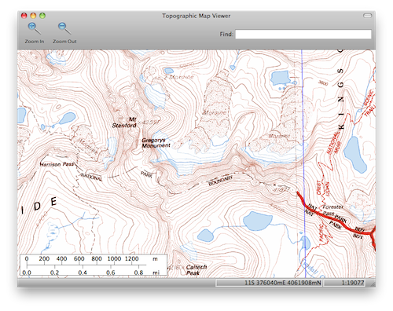

Topographic Map Viewer
ZTopo is a free tool for viewing United States Geological Survey topographic maps on Mac OS, Windows, and Linux computers.
News
- September 19, 2010: ZTopo 0.2 released! New features include
searching for places by name, print preview, and printing grids and graticules.

Features
- Seamlessly pan and zoom through USGS topographic maps.
- View the entire series of 1:100000 (30'x60') and 1:24000 (7.5') for the state of California.
- Overlay geographic and UTM grids on maps.
- Search for places in the USGS database of place names.
- Print sections of topographic maps to a printer so you can take them with you when you go out to send those gnarly 5.11 backcountry routes or whatever it is that you get done out there.
- The map data is transparently downloaded from the internet as it is needed.
Known Limitations
- Currently the maps only include California. In principle it's not hard to add maps for the rest of the United States, but it will take time and more web space.
- You need a reasonably speedy internet connection to download maps.
- There are many features I would like to add when I get the time,
including: magnetic declinations, elevation data, and elevation
profiles. None of these are hard to add, they just take work.
- The Windows version requires Windows XP, Vista, or 7. The Mac
version requires Mac OS X Leopard (10.5) or Snow Leopard (10.6).
- If you are having problems with ZTopo's display of maps, try disabling "OpenGL
rendering" in the Preferences dialog box.
License
This program is free software; you can redistribute it and/or modify it under the terms of the GNU General Public License as published by the Free Software Foundation; either version 2 of the License, or (at your option) any later version.
This program is distributed in the hope that it will be useful, but WITHOUT ANY WARRANTY; without even the implied warranty of MERCHANTABILITY or FITNESS FOR A PARTICULAR PURPOSE. See the GNU General Public License for more details.
Help Out!
I wrote ZTopo in my spare time, and currently I'm paying to host the map data. For legal reasons I can't accept any form of compensation for my work, but you could:
- Offer to host a copy of the map data on the web (the California map is around 21Gb of data). Currently the data is hosted on Amazon S3, which is cheap, but not free, and sharing the load around a bit would be nice.
- Hack on the code. ZTopo is free software, so you can dive right in and help improve it.
- Send me a photo of your trip!
Contact:
Email address: Last name (Hawkins) followed by first letter of first name (Peter)
@cs.stanford.edu.